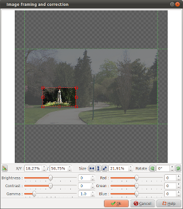

Introduction
The Image framing and correction
dialog box allows several actions :
- Image framing: That is select only a part.
- Image turn: That is change the orientation (portrait /
landscape) or put back of level.
- Image correction: That is change the parameters of colors
and\or exposure.
The image settings are made shot
by shot. So, every shot have its own settings and the way from a
shot to the other one defined the way from a settings to an
other one creating a shot animation: it's Ken Burns effects.
Here are some:
- Zoom on a portion of the image
- Scrolling of a portion from the image to the other one
- Clarification or darkening of a portion of the image
- etc...
This dialog box is called since two others dialog box when you
click the button

:
Description of the dialog box
Framing

|
The framing of an image
is defined by 5 values:
 The horizontal position from the left (X). This
position is expressed in percentage total (%) of the
width of the image.
The horizontal position from the left (X). This
position is expressed in percentage total (%) of the
width of the image.
Example: if X=25 % then the 1st quarter to the left
of the image is eliminated.
 The vertical position from the top of the image ( Y
). This position is expressed in percentage total
(%) of the height of the image.
The vertical position from the top of the image ( Y
). This position is expressed in percentage total
(%) of the height of the image.
Example: if Y=25 % then the 1st quarter at the top
of the image is eliminated.
 The with. This value is expressed in percentage
total (%) of the width of the image.
The with. This value is expressed in percentage
total (%) of the width of the image.
Example: if Width=33 %, then the re-framed image
will represent 1/3 of the image.
 The height. This value is expressed in percentage
total (%) of the height of the image.
The height. This value is expressed in percentage
total (%) of the height of the image.
Example: if Height=33 %, then the re-framed image
will represent 1/3 of the image.
 The rotation angle for z axis. This position is
expressed in degree.
The rotation angle for z axis. This position is
expressed in degree.
Example: if rotation=90 ° then the image is
turned by a quarter to the right.
|
You can use + and - buttons of every input field to make the
settings, either seize directly the values for 5 parameters.
Or then, you can use the interactive zone to make the framing
with the mouse or with the keyboard.
With the mouse:
- Click one of the handle and, while maintaining the mouse
button pushed, move the mouse, allows to modify the size (to
increase or to reduce the image part which will be kept).
- Click the image and, while maintaining the mouse button
pushed, move the mouse, allows to modify the image part
which will be kept.
With the keyboard:
- Use the arrows to move the part of the image which will be
kept.
- Use SHIFT+arrows to move the upper left handle corner,
what allows to change the size of the part of the image
which will be kept.
- Use SHIFT+arrows to move the lower right handle corner,
what allows to change the size of the part of the image
which will be kept.
Note: when the image does not correspond to the geometry of the
video to be produced, transparent zones appear. For example: an
4:3 image used in a 16:9 project will be shown by default with a
transparent zone of every quoted.
The following buttons assist to the image framing:

|
Enable
or disable the magnetic rules: When rules are enabled,
the mouse will automatically be enticed towards the
edges of the photo, facilitating the framing. |

|
Define
automatically the framing to the width of the image. If
the image is too high to fill the frame, the high and
low parts will be cut.
|
 |
Define
automatically the framing to the height of the image. If
the image is too wide to fill the frame, the right and
left parts will be cut. |

|
Define
automatically the framing to the diagonal of the image.
The framing is adjusted by such goes out in the fact
that the image is fully seen. |

|
Turn
the image to the left (on the multiple fellow man of
90°).
|
 |
Turn
the image to the right (on the multiple fellow man of
90°). |
Image correction
Image corrections allow to clear up or to darken the image in
the faults of the following three values:
- Luminosity
- Contrast
- Gamma
Image corrections also allow to modify the colorization of an
image by changing the strength of the primary colors:
For example:
- Rouge : Reduce the red component made to turn yellow the
image - increase It makes make blue the image
- Green : Reduce the green component made to turn red the
image - increase It makes make green the image
- Blue : Reduce the green component made to turn red the
image - increase It makes make blue the image
All the combinations are possible. For example: increase the red
and reduce the green at the same time.
The results depend on the initial strength of every primary
color components of the source image.
Remark : For all correction setting, the

button allows to reset the zone to zero.
See also
ffDiaporama 1.0 - July 2011